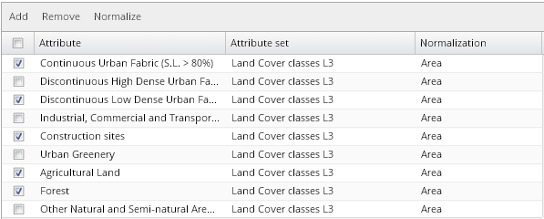
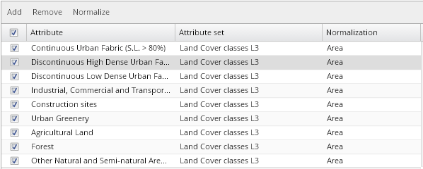

For each chart, displayed attributes are defined by the selection from the complete attribute list available for the particular visualization.
To view or modify the list of these displayed attributes, click the button for chart configuration located above the chart that should be modified.
Attributes displayed in the corresponding chart are listed in the chart attribute list. You can add, remove or normalize attributes from the list.
Use check boxes on the left side of the table to check / uncheck attributes on the list. If you want to check / uncheck all listed attributes at once, you can do it by checking / unchecking the check box in the header cell of the table.
 
All columns in this table can be sorted in ascending or descending order. You can switch between “descending” and “ascending” modes by clicking on the head cell of each table column.
Each attribute belongs to an attribute set – corresponding attribute sets are listed in the second column of the table.
Both attributes and attribute sets can be filtered by key text string, using the attribute filter hidden on the right side of the header cells of the table.